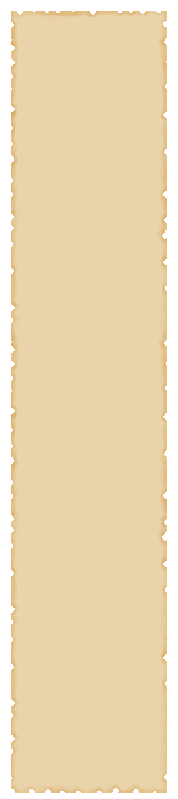

Game features and mechanics.
Here is a brief overview of the core game mechanics.
Crafting.
Crafting is the beginning of progress in the game; without it, you cannot obtain useful resources for survival. All you need are a maximum of 2 different items and their required quantities. First, you need to select an item (by clicking on it in your hand) and press the button labeled 'craft,' then choose an additional item in the other hand. After that, press the button again, and if you have combined the items correctly, the crafted item will appear in the hand you previously selected.
Also, in the game, you can craft not only in your hands but also on workbenches, in kettles, and in the furnace.